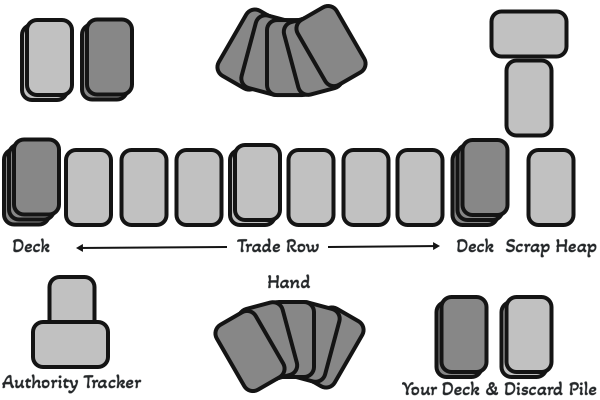
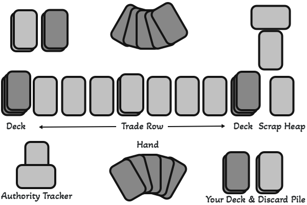

Star Realms 101 - An Unofficial Guide
Star Realms is a strategic deck-building card game. For simple instructions on how to play the game, refer to the rulebook or the instructions on the official Star Realms website. This website's purpose it to provide some more advanced tips and what to do after learning how to play.
You start with a Realm you have authority over. Each game represents an all out battle against another player's realm. You can use your trade to acquire more powerful ships and bases. If you generate enough combat and deplete your opponents authority, you win! You start with a small deck of ships that can provide trade and combat. Will you be able to strike deals with the four powerful factions to build your military might and take over another player's realm? If you don't, you will lose all your authority and your realm will be lost.


The Vast Universe of Space
There may seem to be endless amount of room for anyone in space, but powerful factions compete to claim territory for themselves. Who will you align with to pave your way to victory? Learn more about different kinds of factions and their resources in the two pages below.
Advanced Strategies
Already know how to play the basics and looking to improve? Check out this strategy guide.

Buyer's Guide
Bored of playing one deck again and again and want to know what new cards to get next? Check out this buyer's guide.
Finding New Ways to Play
 

Make your Own Deck: Why not take your favorite cards from each deck and make your own? Pick out twenty cards of each faction and try to spread prices evenly. You could make a deck where all of the card deal damage but there are none that cost more than five. You can make a deck that has some easy coin production options and a large amount of expensive cards. You can make a deck where almost every card lets you draw a card. Why not make a deck that's all bases and see what happens? The possibilities are endless.
Playing with Multiple Decks: The normal set up is fun, but playing with two decks is twice the fun. You can use three cards from each deck as your trade row for a total of six instead of 5 cards from one deck. Put the stack of explorers in between the two small trade rows. When you're done playing, all you have to do is sort out which cards you aquired, and there's symbols on the bottom right each card correlating with what pack it came from to make it easy. Playing with multiple decks will enhance faction combos and introduce new strategies. It's rare, but you can encounter higher extremes of seeing all super expensive cards or one faction the whole game. These situations can be fun and make the game feel new again.